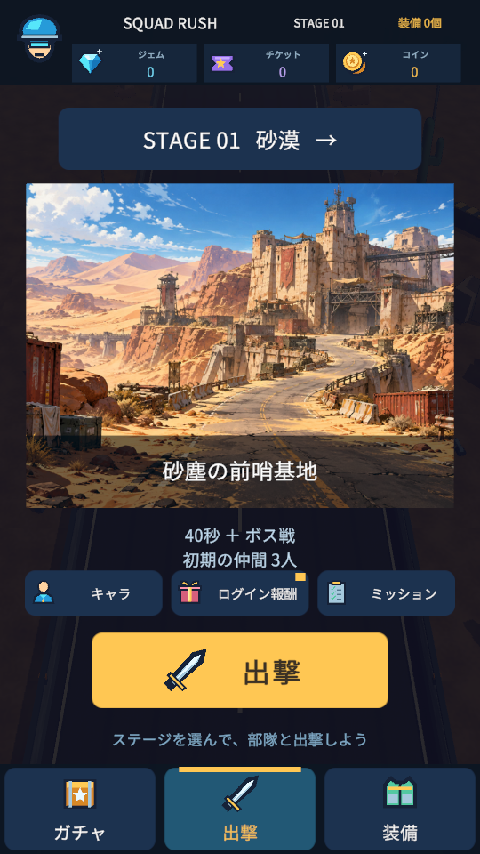
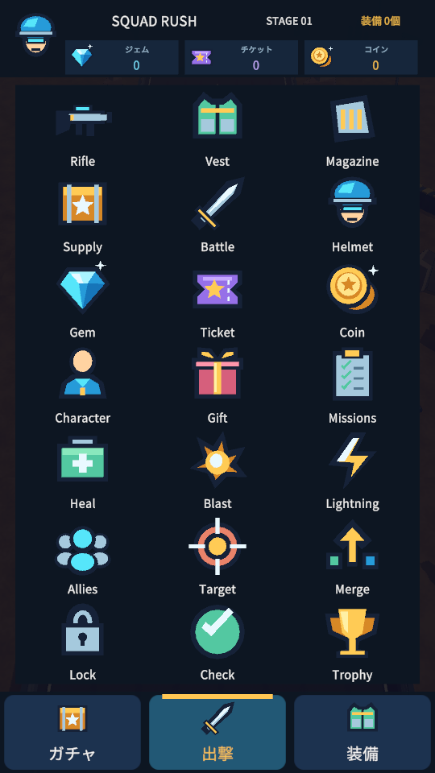
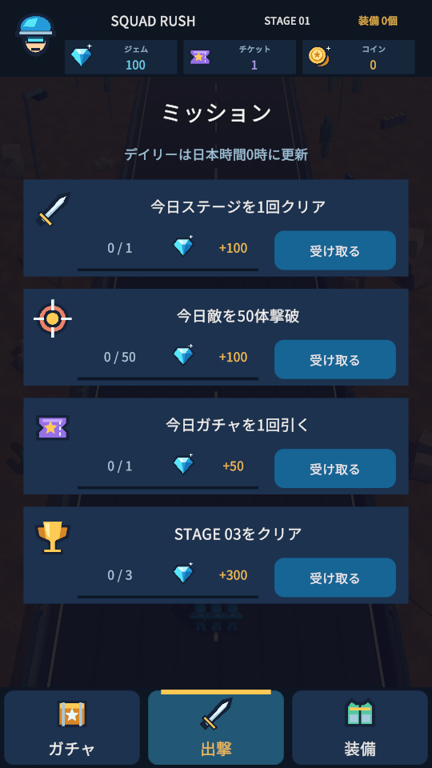
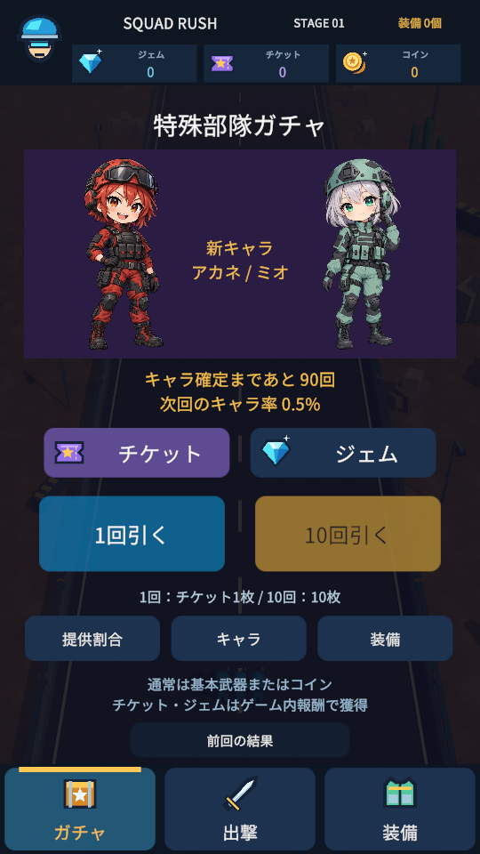
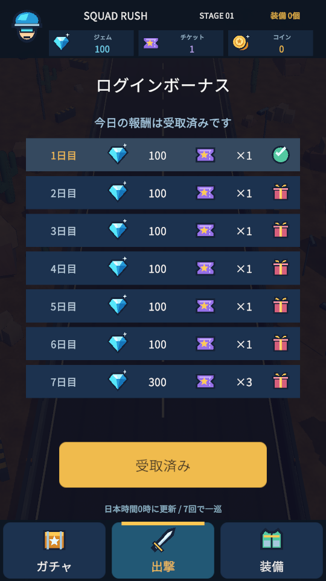
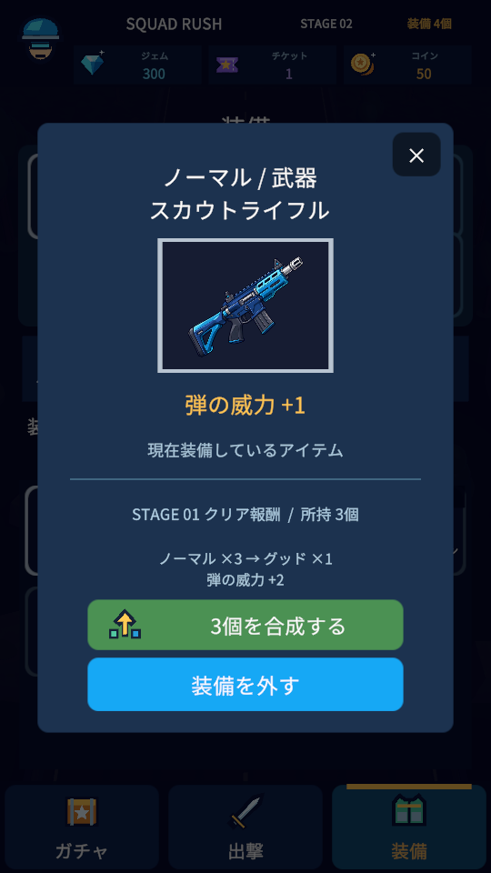
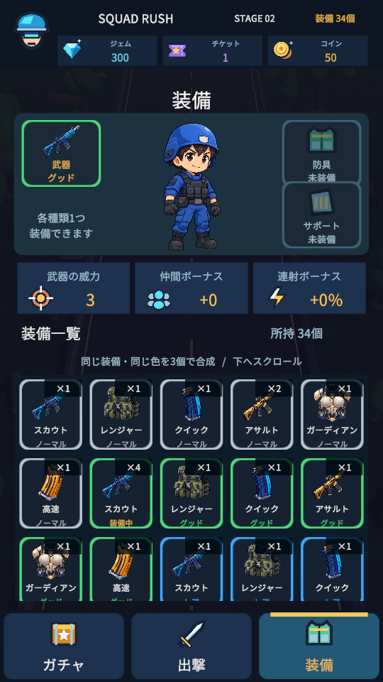
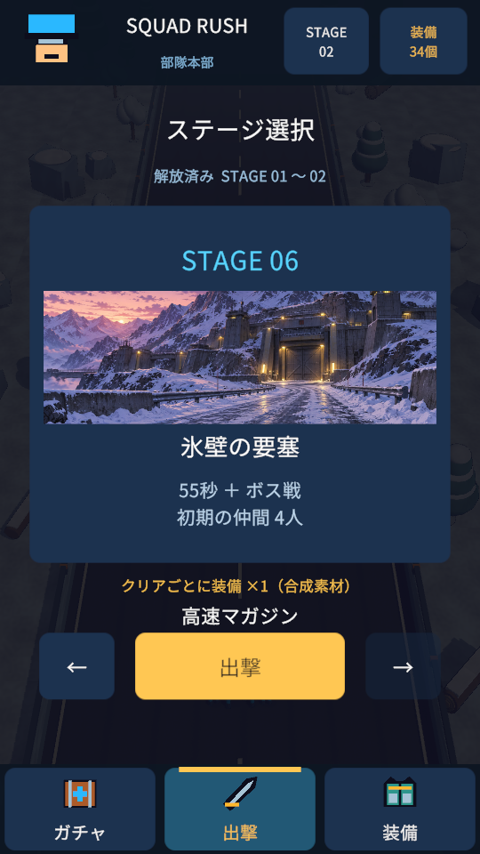

仲間を増やして、
敵の大群を突破しよう。
通貨・報酬・スキルを21種類のアイコンで見やすく。
仲間と装備を集めて、次のステージへ。
広告・課金なし。ブラウザ版はAndroid・iPhone・PCで試せます。AndroidアプリはAndroid 8.0以降のARM64端末向けです。

アイコンで、ひと目でわかる
ジェム・チケット・コイン、ログイン報酬、ミッション、スキル、装備の能力値を統一したイラストで表示。受け取れる報酬の目印、受取済みマーク、ミッションの進捗バーも追加しました。


キャラを集めて、固有スキルで戦おう
初期キャラは青い兵士のレン（仲間＋3）。ガチャからアカネ（敵全体への範囲攻撃）、ミオ（6秒間の連射強化）が登場します。戦闘画面右下のボタンでスキルを発動し、再使用時間を待ってまた使えます。
ガチャ1回はチケット1枚またはジェム100個。キャラ枠合計0.5%、80連目から5.5%・10.5%と上昇し、90連目で確定。キャラが出ると天井をリセットし、10連も順に判定します。通常の排出は基本武器またはコインです。
ログインで毎日ジェム100＋チケット1、7回目は増量。ステージクリアで毎回ジェム100、初クリアはさらに100。ミッションでもジェムを獲得できます。更新は日本時間0時。課金はありません。


装備を集めて、3個で合成しよう
5列の小さなアイコン一覧で、所持数・レアリティ・合成可能な装備を確認。同じ種類・同じレアリティを3個消費して1段階上へ強化できます。白・緑・青・紫・金の5段階。装備中のアイテムは合成後も装備を引き継ぎ、再クリアでも素材を入手できます。所持品と進行は端末内に保存します。


ランダムな景色と、次のステージへ
出撃前はステージのイメージイラストを表示。6種類のロケーションから選び、7以降は同じ絵を繰り返しながら難易度が上がります。戦闘では木や岩の配置が挑戦ごとに変わり、クリアすると次へ進みます。

遊び方
- ホーム上部のステージ名でステージを選び、「出撃」を押す。ホーム中央下の「出撃」から現在のステージへ直接出撃することもできます。
- 指を左右にドラッグして移動。PCは左右キーでも操作できます。
- 射撃は自動。加算・倍率ゲートや青いBOXで仲間を最大1000人まで増やそう。
- 金色のBOXは威力、緑色のBOXは連射を強化。各ステージで武器を育てよう。
- 終盤のボスを倒すとクリア。装備を入手し、ホームの「装備」で付け替え・合成しよう。
- 仲間が0人になったら同じステージを再挑戦。次回も続きから遊べます。
スマホでの起動
Android：APKをダウンロードし、ダウンロード一覧から開いてインストールします。許可の確認が表示された場合は、このアプリをインストールする提供元を確認してください。
iPhone：Safariで「ブラウザで遊ぶ」を開いてください。配布中のAPKはAndroid専用です。iPhone用のネイティブアプリはまだ配布していません。
初回のブラウザ版は読み込みに時間がかかります。実機の性能によって動作が変わるため、これは確認用の試作です。